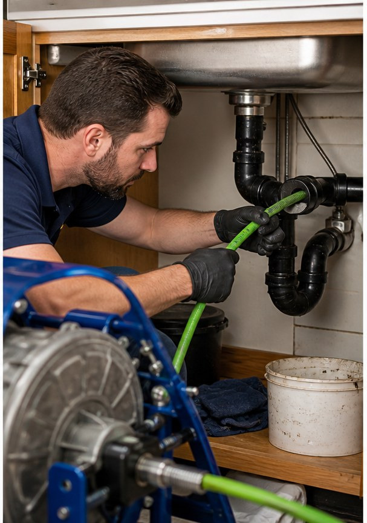
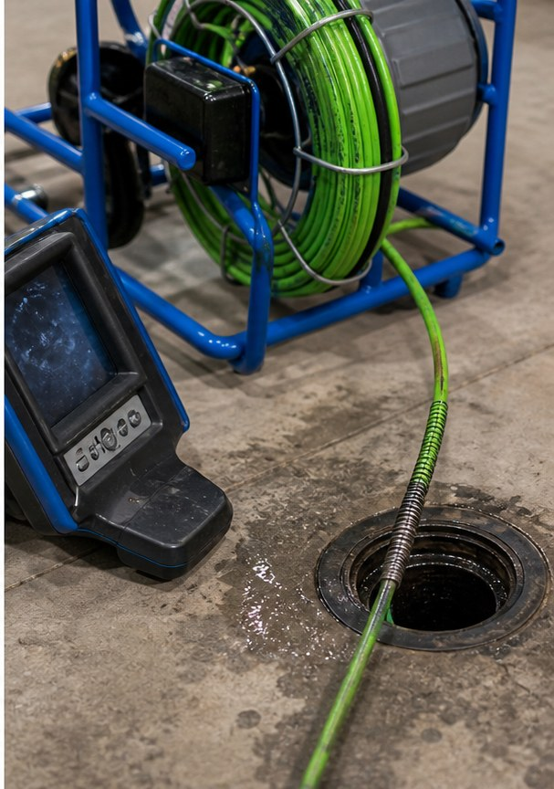

Drain and plumbing help
Drain problem? Make the next call obvious.
Urgent drain help, simple issue checks, and a call-first service path for Spartanburg and the Upstate.
- 4.545 Google reviews
- PlumbingSpartanburg, SC
- UrgentCall for drain help

Services
Clear service options for real customers.
- Drain clearing
- Hydro jetting
- Camera inspection
- Clog removal
- Emergency plumbing
- Preventive maintenance

Built for urgent calls
Drain service information that keeps emergency help clear and easy to reach.
When customers have clogs, backups, or slow drains, services and phone contact stay up front so they can get help without searching around.

Drain urgency check
Choose the drain issue.
Slow drains are best handled before they turn into a backup. A camera inspection can find the real cause.
Service clarity
A simple structure for customers who need plumbing help now.
- 4.5 star rating
- Emergency search category
- 45 public reviews
Call for help
Operation Drains - The Upstate
Spartanburg, SC